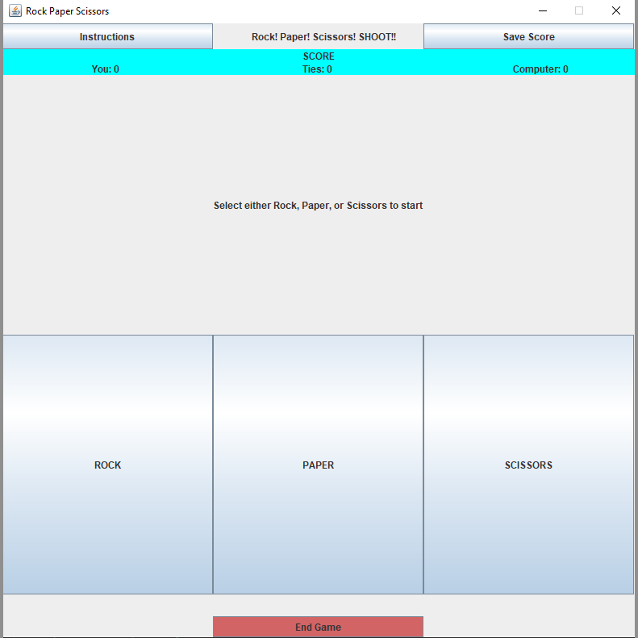

During my time in ICS 211 at Leeward Community College, I created an interactive game called Rock-Paper-Scissors which implements a GUI using Java. GUI stands for Graphical User Interface, in other words, once you run the code, a separate window opens up with the interactive game. My Rock-Paper-Scissors game featured a user vs. computer play style meaning that you will go up against the computer and it even kept track of the score.
Well to play the game, you must first run the code. Then a window with the game and further instructions will appear. The window prompts the user to select either rock, paper, or scissors to start the game. Once the user has picked, the computer will then randomly pick between the same options and the score will update depending on who won along with a message stating if you won, lost, or if it was a tie. If the user were to become lost or confused, an instructions button is located in the top left and it will explain what Rock-Paper-Scissors is and how the user can win. At any time, the user can click on the “Save Score” button in the top right to save the score into a text file and it will then be saved on the user’s computer. To simply call it quits and end the game, the user can click on the red “End Game” on the bottom and a separate window will appear stating the final score.
This project allowed me to create a user-friendly interface. Not only was this project an opportunity but it was also a challenge for me to prove to myself that I was capable of creating programs and software for others. That is one of the reasons why I got so interested in Computer Science and programming. The excitement and euphoria whenever one of your codes finally runs smoothly after hours or even days of hard work is a feeling shared amongst many programmers.